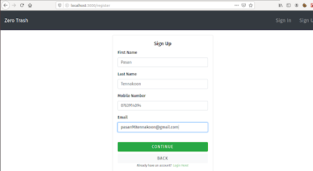
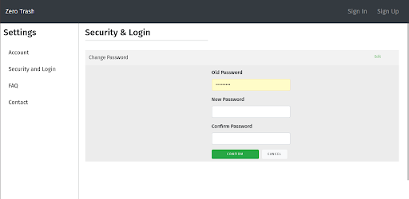
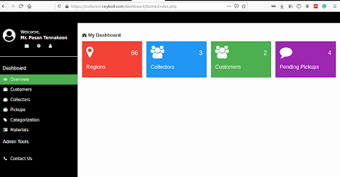
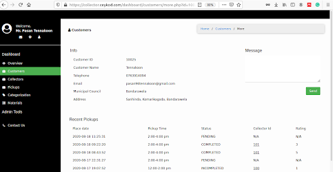
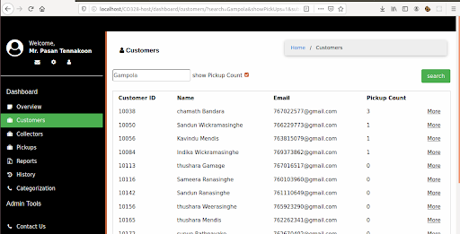

Dilshani Karunarathna
Dilshani Karunarathna
Zero Trash

Zero Trash is a smart waste management platform developed to improve the efficiency of garbage
collection and promote sustainable waste management practices in Sri Lanka. The project was
designed to address the growing challenges of urban waste generation by providing a digital
platform that connects households with garbage collectors, enabling efficient waste collection
while supporting recycling initiatives and the development of a circular economy.
The platform provides separate web interfaces for households and garbage collectors. Registered
users can request waste pickups through the system, while collection requests are automatically
assigned to available garbage collectors. Collectors receive notifications and manage assigned
tasks through the application, improving communication and reducing delays in waste collection.
To improve accessibility, the platform also integrates an SMS notification service, allowing
users without smartphones to receive collection updates.
The system streamlines communication between residents and waste collectors by providing a
centralized platform for scheduling, tracking, and managing waste collection requests. By
improving collection efficiency and encouraging the proper segregation and transportation of
recyclable materials, the platform aims to reduce landfill waste, support recycling activities,
and create additional income opportunities for both households and garbage collectors.
The project involved designing and developing the web application, implementing user management
and pickup scheduling, integrating notification services, and developing the backend logic
required to automate the waste collection workflow. The solution demonstrates how digital
technologies can be applied to improve public services while contributing to environmental
sustainability and smarter urban waste management.
Key Responsibilities
* Developed responsive user interfaces using ReactJS to provide an intuitive user experience
across devices.
* Implemented frontend features based on business and functional requirements.
* Participated in application architecture, UI/UX improvements, and performance optimization.
* Implemented input validation, state management, and reusable React components.
* Wrote unit tests to improve application reliability and maintainability.
* Collaborated within an Agile development team using Git-based version control and code
reviews.
* Assisted in debugging, testing, and improving overall application performance and user
experience.
Technologies
ReactJS, JavaScript, HTML5, CSS3, Git, Unit testing
Gallery





Team
Dilshani Karunarathna
 Nuwan Jaliyagoda
Nuwan Jaliyagoda
 Pasan Tennakoon
Pasan Tennakoon